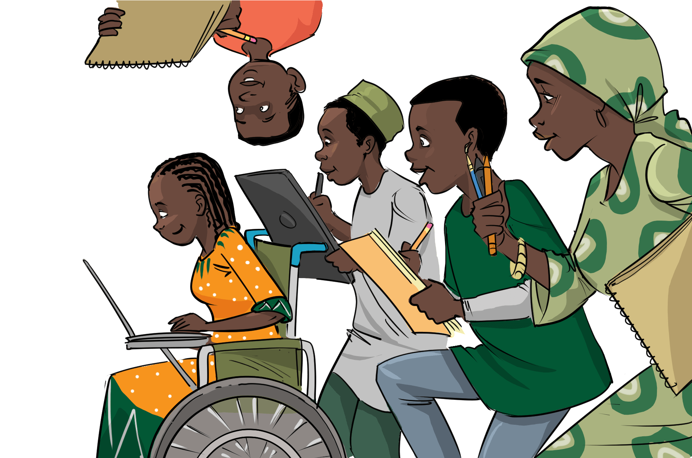

<section class="challenge-area">
  <div class="container-fluid">
    <div class="row">
      <div class="col-lg-6">


        <h1> The Challenge</h1>
        <p>
          On the 1st October 2020, Nigeria will be celebrating its diamond
          jubilee as it turns 60. The Federal Government of Nigeria under the
          Leadership of President Muhammadu Buhari, GCFR has approved an
          inclusive National Independence Celebration program that will see that
          the thematic and creative aspects of the event are designed by
          Nigerians for Nigeria. The FGN wants to use this opportunity to
          harness the power of Nigeria’s creative minds to create a new brand
          identity around the anniversary theme which will be celebrated in the
          public space for one year. The challenge will include selecting the
          best slogan, the best poem and the best photograph that best embodies
          the theme "Together as one". The best concepts from each category of
          the challenge will be selected by a mixture of several assessment
          criteria including a jury. The top three finalists will present their
          work to His Excellency, President Muhammadu Buhari, GCFR, have their
          work used in celebrating Nigeria’s 60th Anniversary and will also
          receive cash prizes, in addition to being part of this epoch-making
          event.
        </p>
      </div>
      <div class="col-lg-6">


        
      </div>
    </div>
  </div>
</section>
